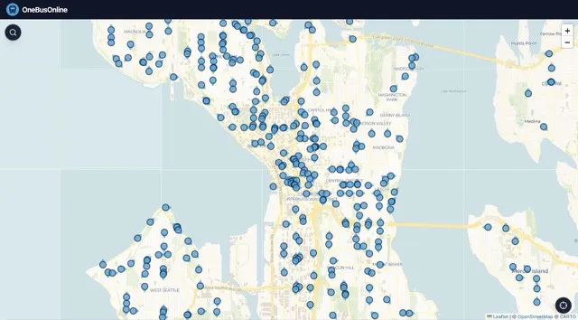
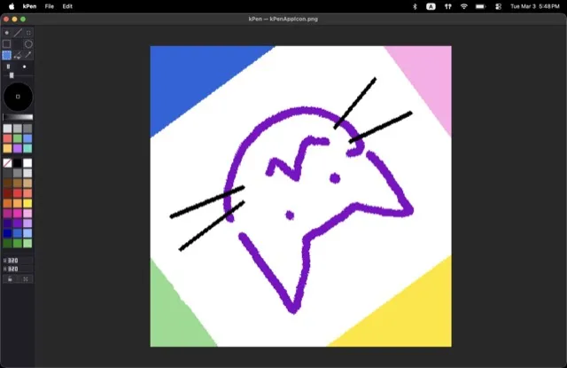
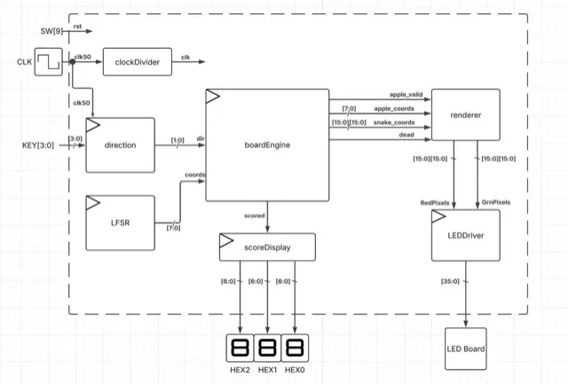

Projects
Hardware, systems, networks and web. Filter by area; everything with a repo link is public.
hardware
2026
A reprogrammable GPIO protocol emulator for Tiny Tapeout on IHP 130 nm, built for the Jane Street protocol-emulator challenge. Two deterministic PIO engines run 16-bit microprograms with cycle-exact timing, so UART, SPI, I²C, JTAG, CAN and 10 Mbit/s Manchester Ethernet are programs, not fixed blocks.
details
- Closes timing at 40 MHz with positive setup slack and zero DRC / LVS / antenna violations.
- Verified in lock-step against a cycle-exact Python model across RTL, FPGA and gate-level netlists; 8 pin-arbitration safety properties proved by k-induction.
- Cut precheck DRC from 7.5 hours to 37 seconds to unblock CI.
SystemVerilogPythoncocotbSymbiYosysLibreLane
web
2025–26

A live Puget Sound transit PWA. React + Leaflet client over an Express backend-for-frontend that exposes 9 Zod-validated endpoints and keeps the upstream API key server-side.
details
- Three-tier cache: HTTP stale-while-revalidate, Redis, and client IndexedDB.
- Cache keys are bounding boxes quantized to integer ticks so client and server always agree.
TypeScriptReactLeafletExpressRedisZod
hardware
2026
A simple 64-bit RISC-V CPU in SystemVerilog. The lab page has a simplified simulator of the same kind of pipeline.
SystemVerilog
systems
2026
An xv6-based teaching kernel for RISC-V, written in Rust: traps, paging, scheduling and syscalls.
RustRISC-V
systems
2026
A Nintendo Entertainment System emulator with SDL2 video and audio. Runs NROM (mapper 0) cartridges; the 6502 core passes the Klaus Dormann functional test suite.
C++17SDL2
systems · tools
2026
A first-person 3D filesystem explorer. It scans a directory tree and generates a dense Tokyo-inspired city: directories become districts, files become buildings with neon signs bearing their real names, and everything can be read, viewed or thrown around in-engine.
details
- Every building is seeded by its file's path hash; height scales with file size.
- Physically-based atmosphere with an 8-minute day/night cycle.
RustBevywgpuAvian
tools
2026

A lightweight raster drawing app. 10 cross-platform releases for macOS, Windows and Linux, installable with brew install --cask kaikino/kpen/kpen.
C++17SDL2CMakeHomebrew
networks · tools
2026
23 hands-on Linux networking labs inside one container. Hosts, routers and switches are network namespaces, cables are veth pairs, and lab check grades you by inspecting live kernel state.
details
- Covers addressing, bridging, routing, sockets, packet capture, iptables/NAT and multi-fault troubleshooting.
- Values are randomised per run; a self-test builds every lab, confirms it fails, applies the solution and confirms it passes.
PythonDockerLinux netns
networks
2026
A Cisco IOS to Extreme EXOS config transpiler built as a scanner → parser → validator → generator pipeline, covering VLANs, link aggregation, ACL policies and SPAN mirrors. Built during my Extreme Networks internship.
details
- 125 tests plus validation on physical switch stacks; cut Layer 2 migration from hours to minutes per device.
- Documented in English and Japanese for partner engineers.
Pythonpytest
networks · tools
2026
A typed ExtremeCloud IQ client with 130+ API operations, token auth, rate-limit-aware retries and pagination. Published to PyPI; 93 tests in CI on Python 3.9–3.13.
PythonPyPIGitHub Actions
networks
2026
A minimal BGP speaker in Python that peers with FRRouting in Docker. Implements the OPEN, KEEPALIVE and UPDATE messages.
PythonFRRDocker
hardware · tools
2026
A script for injecting gate delays into SystemVerilog modules, to expose glitches and races in simulation.
PythonSystemVerilog
hardware
2026

A snake game implemented in SystemVerilog, running on an FPGA with an LED matrix display and 7-segment score.
SystemVerilogFPGA
hardware · systems
2026 · WIP
An ankle-worn sensor node, an Android app and a small ML classifier that score choreography presets. Work in progress.
FirmwareAndroidML
systems · coursework
2026
MultiPaxos KV Store
A sharded key-value store built on MultiPaxos for UW Distributed Systems: leader election, log replication, reconfiguration and shard movement under a model checker. (private, coursework)
Java
systems · coursework
2026
Simple DB Engine
A small database management system with SQL-like operations, a buffer pool, and a query executor. (private, coursework)
Java
cloud
2025
Intelligent Document Explorer
A serverless document-ingestion pipeline built as an AWS intern: 9 Lambdas orchestrated by Step Functions with parallel branches, catch states and a Textract → Rekognition fallback so no upload is dropped. (private)
details
- S3 → EventBridge → SQS for async Textract polling; Comprehend summaries; idempotent DynamoDB writes across 10 file formats.
- Multi-VPC isolation with private subnets and peering, least-privilege IAM, CloudWatch dashboards and alarms.
PythonAWS LambdaStep FunctionsTextractDynamoDBSAM